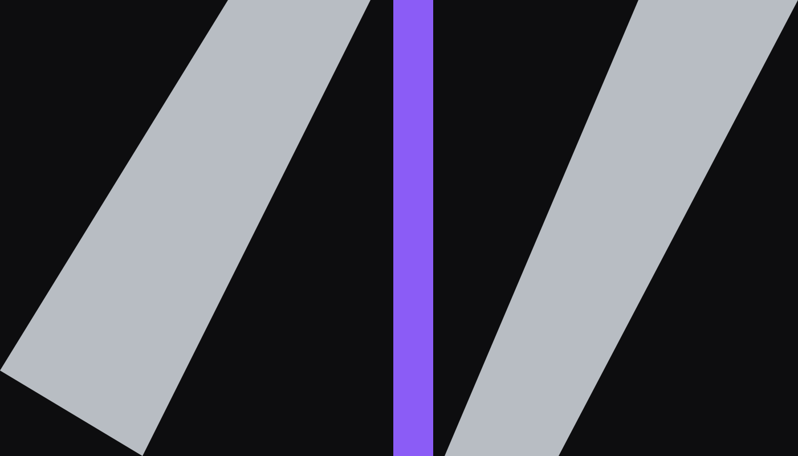

New
NewVector Shell
 ORVYN
ORVYNCollection / 01
A uniform for movement between the visible and the unfinished.

The rule
Each piece shares a detachable violet tab. Remove it and the garment returns to monochrome; keep it and the silhouette becomes a route marker.